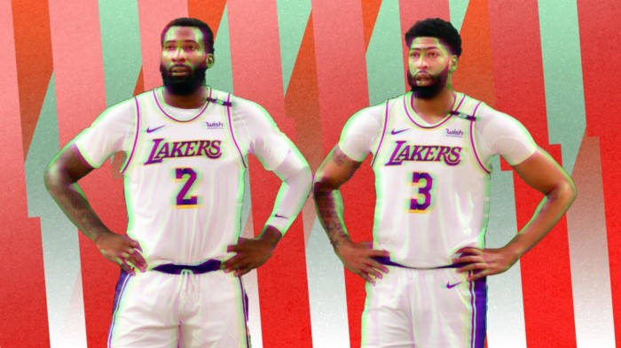

The imminent death of the big man
As the league drifts towards explosive guards and switchy wings, big men are becoming increasingly marginalised. So why do NBA teams keep sinking assets into them?
Sean Carroll illustation
Year in and year out, NBA teams fall in love with the tantalising talent of 7’0” behemoths with seemingly silky ball handling skills and the shooting range of their 6’0” counterparts. Recently however, championships have been won by teams led by switchy wings and superstar guards. Have NBA teams been drafting incorrectly for the past 20 years?
NBA historians will tell you that having a burly, two-way big man is the key to success in the league, and they would be somewhat correct. The 1960s and 1970s were dominated by the likes of Bill Russell, Kareem Abdul-Jabbar and Wilt Chamberlain. The 1980s were the wing-led Magic Johnson and Larry Bird era, both aided by their star big men Abdul-Jabbar and Kevin McHale. The 1990s and 2000s had Shaq, Hakeem Olajuwon and Tim Duncan as your championship winning big men, but these are the eras where the game truly started to shift.
Michael Jordan and Scottie Pippen, both no taller than 6’8”, managed to win six championships in the 90s. Shaq and Duncan managed to be instrumental in seven of the ten championships between 2000 and 2009, but the league’s superstars had begun to shrink. Kobe Bryant (who aided Shaq heavily in the Lakers’ 2000–02 threepeat), Dwyane Wade and LeBron James’ careers began to take off in the noughties and the trend has well and truly continued into the 2010s.
Of the last ten championships, the traditional big man has only been influential in two (Duncan in 2014 and Davis in 2020). In those corresponding ten seasons, 21 big men have been drafted in the top ten picks of the draft. The only one to have found any championship success is Davis, and he did so for a team that did not draft him, while being attached to one of the greatest players of all time. Additionally, none of the top ten big men in the ten drafts before that have found any championship success either.
In 2018, three teams had the chance to change their franchise forever, and all failed miserably. First, the Phoenix Suns believed that Devin Booker and Luka Doncic could not fit on the court together, despite having hired Luka’s international head coach to be their head coach before the draft. Second, the Sacramento Kings believed that Marvin Bagley would provide greater value to their team next to De’Aaron Fox. Third, the Atlanta Hawks thought Trae Young was going to be Steph Curry before Doncic was going to be LeBron. Deandre Ayton and Bagley went first and second respectively in that draft, and Doncic third. The Dallas Mavericks traded only a future first round pick for the rights to draft their franchise changer, talk about asset maximisation.
The heavy, pounding big man has by no means been invalidated, but defensive versatility and the rise of the three-point shot have made elite big men much less valuable.
One major issue with the traditional big man is their inability to close games. There are only six big men who I would be willing to give the ball to in the final two minutes of the game to create for themselves or their teammates: Nikola Jokic, Anthony Davis, Joel Embiid, Karl-Anthony Towns, Domantas Sabonis and Nikola Vucevic. Compared to the number of wings and guards that I would be comfortable closing games with, this list is scarce.
Defensive versatility is also an issue for modern bigs. Many of the league’s star big men are significantly less mobile than their smaller teammates and can become major liabilities at the end of games. Teams like the Milwaukee Bucks have played drop coverages in the past with their centre Brook Lopez and been punished for doing so. They have made significant strides this year with the acquisition of PJ Tucker and a switching defensive strategy, but they have also not been tested in the playoffs, sweeping the Heat in the first round.
Rudy Gobert, the likely defensive player of the year, has a bevy of lowlight clips where he is being spun in circles by smaller and more skilful guards, and the major fear is that his defensive talents will be negated in the final rounds of the playoffs. Vucevic and Towns have proven to be poor defenders and although Jokic is an extremely smart and capable defender, his speed will always be a liability against the likes of Damian Lillard or James Harden.
The Golden State Warriors of 2017 and 2018 provided the rest of the NBA with a blueprint to building a juggernaut team with their death lineup. As long as you have five switchable players on the court and some talented scoring, you will win games. I believe the aforementioned Bucks are the closest team to this blueprint, with the lineup of Holiday, Middleton, Connaughton, Tucker and Antetokounmpo all able to switch and defend most other players in the league.
This level of defensive versatility is hard to acquire and retain however, so teams find themselves having to carry two or three big men to defend every other team’s corresponding big men.
Outside of the 2017–18 Warriors, every NBA champion team has had a starting centre in one form or another. The Heatles in Miami had Joel Anthony starting next to Chris Bosh and LeBron in the front court. The 2015 Warriors had Andrew Bogut, the 2011 Mavericks had Tyson Chandler and even the 2014 Spurs had Thiago Splitter assisting Tim Duncan in the front court.
What is the similarity amongst all of these big men? They were relatively cheap and nasty.
Each of these franchises realised that their assets had to be allocated to the more important positions and players on the court. The cash strapped Heatles spent endless amounts of money on their three superstars and were happy to phone it in with the centre position — to the tune of two NBA championships.
The 2019 Toronto Raptors were led by a franchise-changing trade for wing Kawhi Leonard, the 2016 Cavaliers were led by LeBron James and Kyrie Irving. Even the 2009–10 Lakers were led by the late Kobe Bryant.
How does this affect the draft?
Firstly, recent history shows that you are more likely to win a championship with a guard or wing you have drafted compared to a big man. Bryant, Wade and Curry all won championships with their original team and only Duncan completed this feat with the Spurs. The LeBron/Irving tandem could also be added here but that feels like a cheap win so we will disregard it.
Secondly, centres often take many more years to develop into the stars they may potentially become. The issue here is that teams are often less willing to hang around for an unproven commodity compared to a proven one. Drafting a big man in the top ten will always be riskier and teams will be more willing to part ways with such players.
Finally, the trend speaks for itself. From Michael Jordan to LeBron James to Kobe Bryant, clutch wings win championships.
The Suns may have stumbled upon some success of late with the acquisition of Chris Paul, but the post-Paul years loom large if the Suns fail to win a championship in the next two seasons with Paul, Ayton and Devin Booker. Doncic and the Mavericks’ future, however, are looking as bright as can be, due to a relatively weak roster being dragged to the playoffs by their superstar 22-year-old.
This is not a cut and dry conversation, though. Joel Embiid may well drag the Philadelphia 76ers to a finals berth and could eventually be an NBA Champion, or Deandre Ayton may provide enough size and skill for the Suns to finish strong and win it all. But there have been more misses than hits in the past 20 years, even as recently as the James Wiseman over Lamelo Ball pick.
The Deep TwoThe Deep Two contributor Lukas Petridis likes to ask the roster building question, “Can this person play in the final minutes of a playoff game?”, and the answer for most big men is often, “no”.